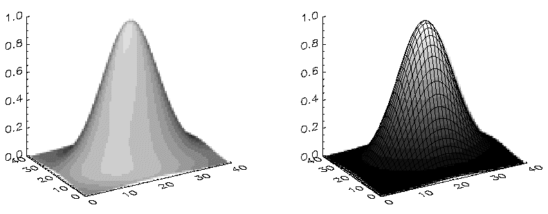
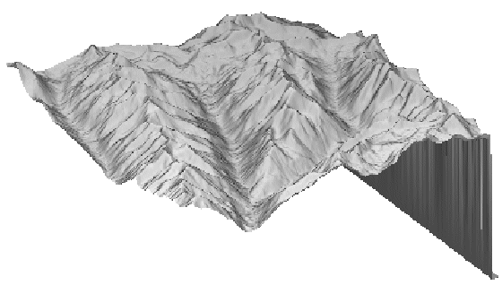

Syntax | Arguments | Keywords | Examples | Version History | See Also
The SHADE_SURF procedure creates a shaded-surface representation of a regular or nearly-regular gridded surface with shading from either a light source model or from a user-specified array of intensities. Displays are easily constructed depicting the surface elevation of a variable shaded as a function of itself or another variable. This procedure and its parameters are similar to SURFACE, but it renders the visible surface as a shaded image rather than a mesh. Given a regular or near-regular grid of elevations it produces a shaded-surface representation of the data with hidden surfaces removed.
The SET_SHADING Procedure procedure can be used to control the direction of the light source and other shading parameters.
If the graphics output device has scalable pixels (e.g., PostScript), the output image is scaled so that its largest dimension is less than or equal to 512 (unless the PIXELS keyword is set to some other value). This default resolution may not be high enough for some datasets. If your output looks jagged or “stair-stepped”, try specifying a larger value with the PIXELS keyword.
When outputting to a device that prints black on a white background, (e.g., PostScript), pixels that contain the background color index of 0 are set to white.
If the (X, Y) grid is not regular or nearly regular, errors in hidden line removal will occur. If the T3D keyword is set, the 3-D to 2-D transformation matrix contained in !P.T must project the Z axis to a line parallel to the device Y axis, or errors will occur. The SHADE_SURF_IRR procedure can be used to render many datasets that do not meet these requirements. Irregularly-gridded data can also be made interpolated to a regular grid using the TRIGRID and TRIANGULATE routines.
SHADE_SURF, Z [, X , Y ] [, AX = degrees ] [, AZ = degrees ] [, IMAGE = variable ] [, MAX_VALUE = value ] [, MIN_VALUE = value ] [, PIXELS = pixels ] [, / SAVE ] [, SHADES = array ] [, / XLOG ] [, / YLOG ]
Graphics Keywords:
[, CHARSIZE=
value
] [, CHARTHICK=
integer
] [, COLOR=
value
][, /DATA | , /DEVICE | , /NORMAL] [, FONT=
integer
] [, /NODATA] [, POSITION=
[X
0
,
Y
0
,
X
1
,
Y
1
]
] [, SUBTITLE=
string
] [, /T3D] [, THICK=
value
] [, TICKLEN=
value
] [, TITLE=
string
]
[, {X | Y | Z}CHARSIZE=
value
]
[, {X | Y | Z}GRIDSTYLE=
integer
{0 to 5}]
[, {X | Y | Z}MARGIN=
[left
,
right]
]
[, {X | Y | Z}MINOR=
integer
]
[, {X | Y | Z}RANGE=
[min
,
max]
]
[, {X | Y | Z}STYLE=
value
]
[, {X | Y | Z}THICK=
value
]
[, {X | Y | Z}TICKFORMAT=
string
]
[, {X | Y | Z}TICKINTERVAL=
value
]
[, {X | Y | Z}TICKLAYOUT=
scalar
]
[, {X | Y | Z}TICKLEN=
value
]
[, {X | Y | Z}TICKNAME=
string_array
]
[, {X | Y | Z}TICKS=
integer
]
[, {X | Y | Z}TICKUNITS=
string
]
[, {X | Y | Z}TICKV=
array
]
[, {X | Y | Z}TICK_GET=
variable
]
[, {X | Y | Z}TITLE=
string
]
[, ZVALUE=
value
{0 to 1}]
The two-dimensional array to be displayed. If X and Y are provided, the surface is plotted as a function of the ( X , Y ) locations specified by their contents. Otherwise, the surface is generated as a function of the array index of each element of Z .
This argument is converted to double-precision floating-point before plotting. Plots created with SHADE_SURF are limited to the range and precision of double-precision floating-point values.
A vector or two-dimensional array specifying the X coordinates of the grid. If this argument is a vector, each element of X specifies the X coordinate for a column of Z (e.g., X[0] specifies the X coordinate for Z[0,*] ). If X is a two-dimensional array, each element of X specifies the X coordinate of the corresponding point in Z ( X ij specifies the X coordinate for Z ij ).
This argument is converted to double-precision floating-point before plotting.
A vector or two-dimensional array specifying the Y coordinates of the grid. If this argument is a vector, each element of Y specifies the Y coordinate for a row of Z (e.g., Y[0] specifies the Y coordinate for Z[*,0] ). If Y is a two-dimensional array, each element of Y specifies the Y coordinate of the corresponding point in Z ( Y ij specifies the Y coordinate for Z ij ).
This argument is converted to double-precision floating-point before plotting.
This keyword specifies the angle of rotation, about the X axis, in degrees towards the viewer. This keyword is effective only if !P.T3D and the T3D keyword are not set. If !P.T3D is set, the three-dimensional to two-dimensional transformation used by SURFACE is contained in the 4 by 4 array !P.T.
The surface represented by the two-dimensional array is first rotated, AZ (see below) degrees about the Z axis, then by AX degrees about the X axis, tilting the surface towards the viewer (AX > 0), or away from the viewer.
The AX and AZ keyword parameters default to +30 degrees if omitted.
The three-dimensional to two-dimensional transformation represented by AX and AZ, can be saved in !P.T by including the SAVE keyword.
This keyword specifies the counterclockwise angle of rotation about the Z axis. This keyword is effective only if !P.T3D is not set. The order of rotation is AZ first, then AX.
A named variable into which an image containing the shaded surface is stored. If this keyword is omitted, the image is displayed but not saved.
The maximum value to be plotted. If this keyword is present, data values greater than the value of MAX_VALUE are treated as missing and are not plotted. Note that the IEEE floating-point value NaN is also treated as missing data.
The minimum value to be plotted. If this keyword is present, data values less than the value of MIN_VALUE are treated as missing and are not plotted. Note that the IEEE floating-point value NaN is also treated as missing data.
Set this keyword to a scalar value that specifies the maximum size of the image dimensions, in pixels. PIXELS only applies when the output device uses scalable pixels (e.g., the PostScript device). Use this keyword to increase the resolution of the output image if the default looks jagged or “stair-stepped”.
Set this keyword to save the 3-D to 2-D transformation matrix established by SHADE_SURF in the system variable field !P.T. Use this keyword when combining the output of SHADE_SURF with the output of other routines in the same plot.
An array expression, of the same dimensions as Z , that contains the color index at each point. The shading of each pixel is interpolated from the surrounding SHADE values. If this parameter is omitted, light-source shading is used. For most displays, this parameter should be scaled into the range of bytes.
Note: When using the SHADES keyword on True Color devices, we recommend that decomposed color support be turned off, by setting DECOMPOSED=0 for DEVICE Procedure .
Set this keyword to specify a logarithmic X axis.
Set this keyword to specify a logarithmic Y axis.
See Direct Graphics Keywords for the description of the following graphics and plotting keywords:
CHARSIZE , CHARTHICK , COLOR , DATA , DEVICE , FONT , NODATA , NORMAL , POSITION , SUBTITLE , T3D , THICK , TICKLEN , TITLE , [XYZ]CHARSIZE , [XYZ]GRIDSTYLE , [XYZ]MARGIN , [XYZ]MINOR , [XYZ]RANGE , [XYZ]STYLE , [XYZ]THICK , [XYZ]TICKFORMAT , [XYZ]TICKINTERVAL , [XYZ]TICKLAYOUT , [XYZ]TICKLEN , [XYZ]TICKNAME , [XYZ]TICKS , [XYZ]TICKUNITS , [XYZ]TICKV , [XYZ]TICK_GET , [XYZ]TITLE , ZVALUE
; Create a simple dataset:
D = DIST(40)
; Display the dataset as a light-source shaded surface:
SHADE_SURF, D, TITLE = 'Shaded Surface'
Instead of light-source shading, an array of the same size as the elevation dataset can be used to color the surface. This technique creates four-dimensional displays.
; Create an array of shades to use:
S = SIN(D)
; Now create a new shaded surface that uses the array of shading
; values instead of the light source:
SHADE_SURF, D, SHADES = BYTSCL(S)
Note that the BYTSCL function is used to scale S into the range of bytes.
The following figure illustrates the application of SHADE_SURF, with light-source shading, to the two-dimensional Gaussian. This figure was produced by the following statements.
; Create a 40-by-40 array in which each element
; is equal to the Euclidean distance from the center.
Z = SHIFT(DIST(40), 20, 20)
; Make Gaussian with a 1/e width of 10:
Z = EXP(-(Z/10)^2)
SHADE_SURF, Z
The right half of the following figure shows the use of an array of shades, which in this case is simply the surface elevation scaled into the range of bytes.
|
 |
The output of SURFACE is superimposed over the shaded image with the statements below.
; Show Gaussian with shades created by scaling
; elevation into the range of bytes.
SHADE_SURF, Z, SHADES=BYTSCL(Z, TOP = !D.TABLE_SIZE)
; Draw the mesh surface over the shaded figure.
; Suppress the axes:
SURFACE, Z, XST = 4, YST = 4, ZST = 4, /NOERASE
The next figure shows the Maroon Bells data as a light-source shaded surface. It was produced by the following statements:
; Restore variables.
@cntour01
SHADE_SURF, elev, AZ=210, AX=45, XST=4, YST=4, ZST=4
The AX and AZ keywords specify the orientation. The axes are suppressed by the axis-style keyword parameters; as in this orientation, the axes are behind the surface.
|
 |
|
Original |
Introduced |
ISURFACE, POLYSHADE , SET_SHADING Procedure , SHADE_VOLUME Procedure , SURFACE Procedure